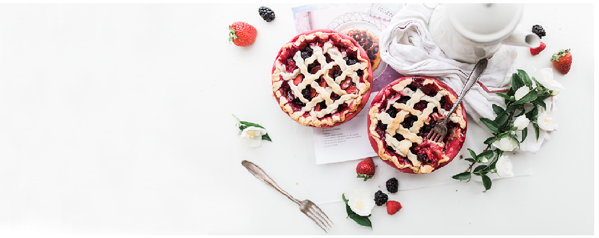

Bananas Foster Ice Cream Cake
If you're looking for decadence, look no further — you've found the Holy Grail of desserts. Honestly, this cake makes us wonder why Bananas Foster hasn't always been served on top of ice cream cake.